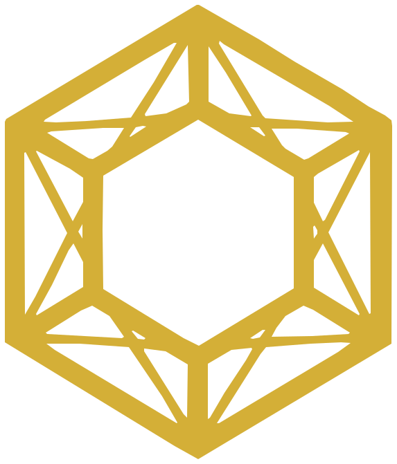

解決牛奶外泌體最大的難題：酪蛋白。
粗提牛奶外泌體常殘留大量酪蛋白，導致蛋白聚集、配方沉澱、乳化破壞與異味。我們優化的前處理程序可高效分離雜質，蛋白質組學顯示 αs2-Casein 未檢出、αs1/β/κ-Casein 降至極低。

Jewelon Bio.Jewelon Bio 專注於高純度牛奶外泌體的研發、量產與品質鑑定，以科學實證與規模化製程，協助亞太及全球品牌走進「細胞級煥新」的新時代。
如同寶石需要切割與淬鍊才能閃耀，外泌體也必須經過精密分離與純化，才能真正發揮價值。
市場上充斥著「加一點就能宣稱」的外泌體原料，Jewelon Bio 選擇了更難的路：從天然生乳出發，逐步去除脂肪、酪蛋白與雜質，以生物製藥等級的純化技術，留下結構完整、濃度可量化的奈米囊泡。
唯有可被檢測的成分，才值得被宣稱。
Logo 的六角幾何，象徵寶石切面，也象徵外泌體精密的膜結構。
以嚴謹科學與可量產的純化技術，讓每一個品牌都能用得起、說得清、驗得到的高品質外泌體。
成為亞太區乃至全球生技藥妝產業中，最具影響力的高純度牛奶外泌體領航者。
雙軌驅動：原料供應 × CDMO／QC 服務，從現成原料到專屬開發，陪伴夥伴走完整條產品鏈。
胞外囊泡（Extracellular Vesicles, EVs）是細胞釋放的奈米級「信使」，以磷脂雙分子層包裹蛋白質、活性肽、microRNA 與 mRNA，將修護訊號傳遞給目標細胞，從底層啟動自我更新。
外泌體（Exosome）是 EVs 中粒徑約 30–150 nm 的特定亞群；由於工業純化取得的多為富含外泌體的囊泡群，國際胞外囊泡學會（ISEV）建議以 EVs 統稱。
不靠酸、不靠熱，向細胞傳遞更新訊號。
活化真皮細胞，支撐肌膚彈力結構。
作用於毛囊真皮乳頭細胞，維持健康的毛髮生長週期。
從生乳前處理到高度純化，每一道工序都為了同一個目標：留下完整、高濃度、無雜質的外泌體。
可追溯的天然生乳來源
去除乳脂，為純化做準備
移除主要過敏原與沉澱元兇
Aixon 膜純化 × TFF 切向流過濾
取得高濃度、結構完整的外泌體
粗提牛奶外泌體常殘留大量酪蛋白，導致蛋白聚集、配方沉澱、乳化破壞與異味。我們優化的前處理程序可高效分離雜質，蛋白質組學顯示 αs2-Casein 未檢出、αs1/β/κ-Casein 降至極低。
Aixon 膜純化技術確保原料活性與批次間品質穩定，讓配方師每一次都拿到一樣的原料。
傳統死端過濾易使濾膜垂直阻塞；TFF 讓流體平行於膜面流動，在濃縮與洗滌過程中維持高回收率、降低阻塞，同時保護外泌體雙層膜結構——這正是可規模量產的關鍵。
有多少？多大？
以雷射光散射＋布朗運動逐顆追蹤。實測 4.16×10¹² ± 3.46×10¹¹ particles/mL；Mean 155.2 nm、Mode 152.7 nm、D10 106.6／D50 151.4／D90 205.7 nm。
結構完整嗎？
典型杯狀囊泡構造、雙層膜完整，證實純化工藝未破壞囊泡。
真的是外泌體嗎？乾淨嗎？
CD9、CD81、CD63、TSG101 陽性；Actin 內部對照穩定；Calnexin 陰性（無細胞碎片與內質網雜質）。
攜帶什麼訊息？雜質多少？
EV 標誌蛋白富集；酪蛋白極低或未檢出；顯著富集於傷口癒合、細胞貼附、皮膚發育通路。
FACTS 原則由美國藥妝先驅 SkinMedica 提出，是評估胞外囊泡原料品質的新標準。以下是三大來源的比較：
| FACTS | 人源外泌體如 SkinMedica | 植物源外泌體如 赫蓮娜 EXO | Jewelon 牛奶外泌體Raw Milk EVs |
|---|---|---|---|
| F配方穩定性 | 囊泡較脆弱，調配與保存條件嚴苛 | 穩定性佳，但與人體膜結構差異較大 | 雙層膜完整，適配精華、面膜等多元劑型 |
| A活性與來源 | 活性高，受細胞傳代與批次影響 | 約 1.1×10⁹ / mL | NTA 實測 4.16×10¹² / mL |
| C臨床研究 | 體外與臨床數據豐富 | 多項體外與塗抹實測 | 細胞、小鼠、2–3 個月人體頭皮實測 |
| T來源類型 | 人源成纖維細胞，追溯複雜 | 海茴香植物細胞 | 生乳可追溯；CD9/CD81/CD63/TSG101 陽性 |
| S安全性 | 生物安全、倫理與法規限制 | 無人源疑慮 | Calnexin 陰性；去酪蛋白降低過敏風險；無人源倫理疑慮 |
← 左右滑動查看完整表格 →
兼具人源的高相容性與植物源的安全性——這就是牛奶外泌體的第三條路。
他牌資訊整理自公開報導與品牌官方資料，僅供技術比較參考。
深度產學合作，結合多組學（Multi-omics）解析，持續研究外泌體內部的活性蛋白與核酸調控機制，讓每一項功效都有機制可循。
原料已登錄國際化妝品原料名稱（INCI Names），可依法宣稱「Exosome（外泌體）」，協助品牌商安心布局全球市場。
沒有檢測數據的功效，我們不說。
每一道純化工序，都是為了留下真正有價值的部分。
可量產的技術，才能真正走進市場。
我們的成功，寫在合作夥伴的暢銷品上。